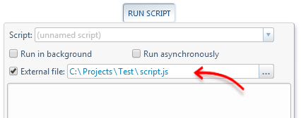
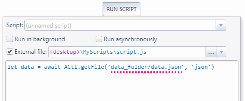

A script's source code can optionally be located in a local file or URL. This is known as the script's location.

Upon execution, the script is read directly from its location, so any changes made to the file or URL up to that point will take effect.
This allows you, for example, to keep your scripts in your hard drive and edit them with any external code editor or IDE
instead of using AutoControl's integrated code editor.
Also, when a script has a location, any function that takes as argument an absolute path or URL can also accept a relative path or URL.
Among those functions are
ACtl.include,
ACtl.import,
ACtl.getFile,
ACtl.saveFile and a few others.
For example, in the case shown in the image above, the script's source code is located in
C:\Projects\Test\script.js.
So, inside that script we can call
ACtl.getFile('data.json', 'json') to load the file
C:\Projects\Test\data.json.
Additionally, the script location can contain
placeholders such as
<desktop>,
<documents> and others. For example:

Then, the relative path passed to the
ACtl.getFile function will translate to
<desktop>\MyScripts\data_folder\data.json
 Forum
Install now from theChrome Web Store
Forum
Install now from theChrome Web Store